Tallinn — středověk u Baltu
Srpen 2018. Hlavní město s nejlépe zachovaným středověkým jádrem v severní Evropě. Hradby, věže, dlažební kostky a moderní digitální stát ve stejných ulicích.
🏰 Tallinn
UNESCO staré město, hradby, věže, Toompea, kostely. (11 fotek · srpen 2018)
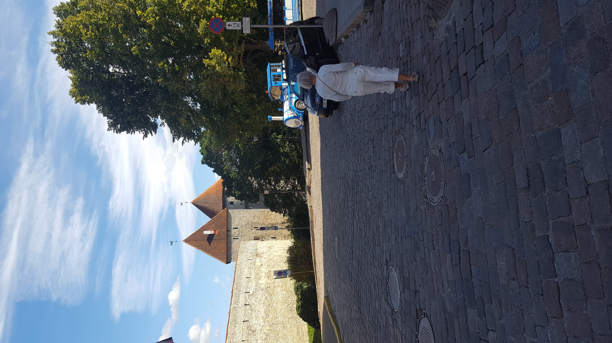
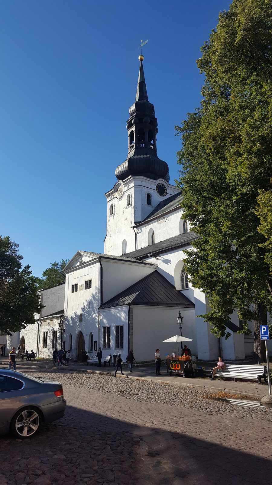
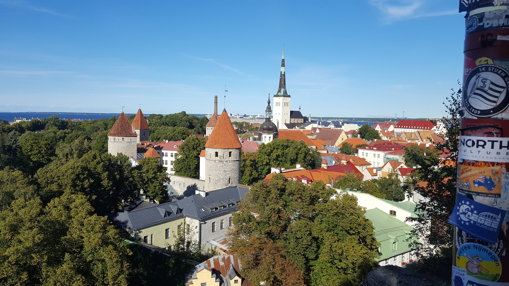
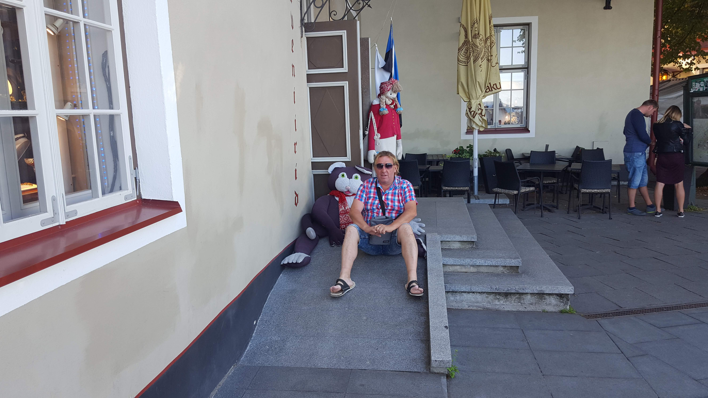
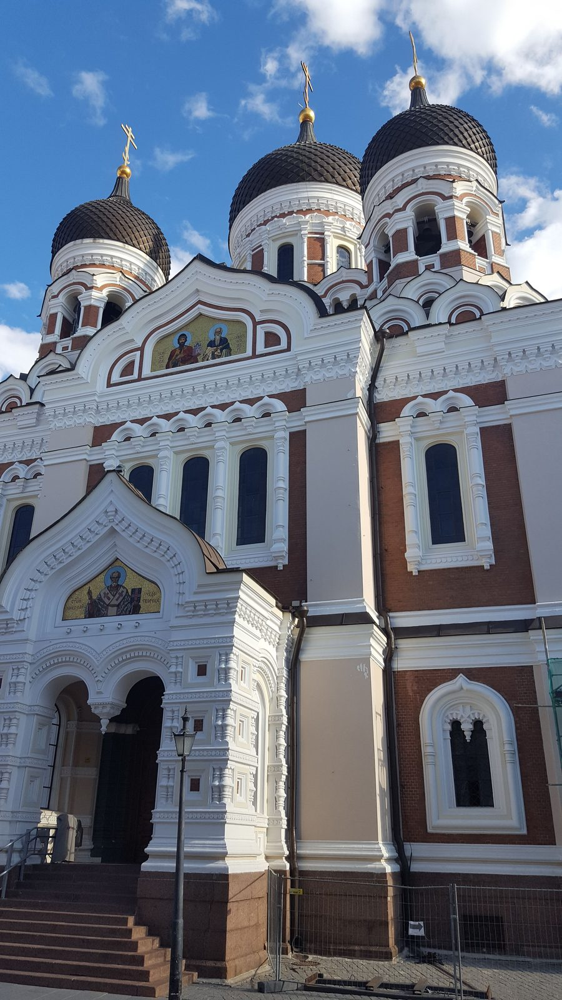
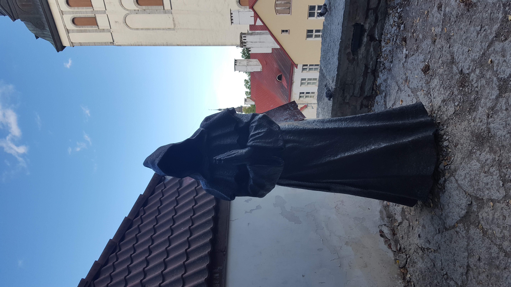
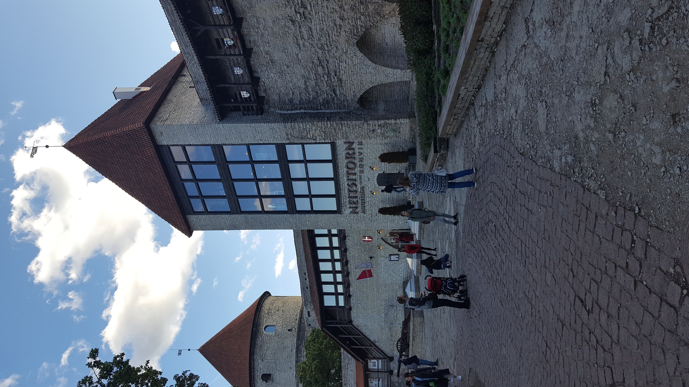
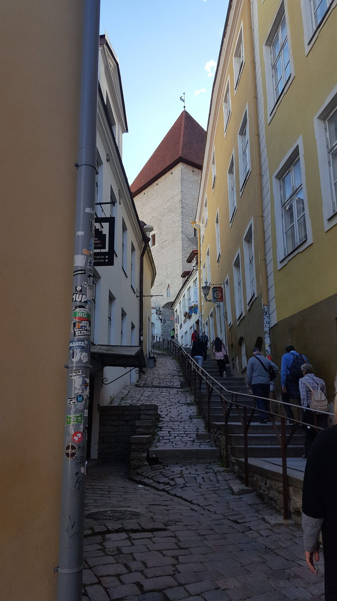
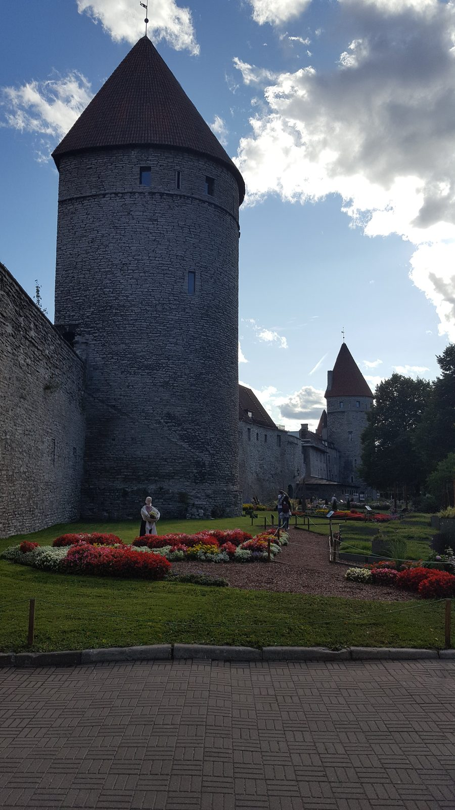
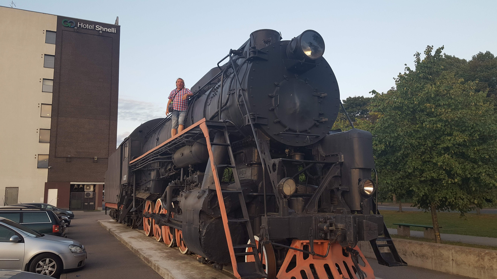
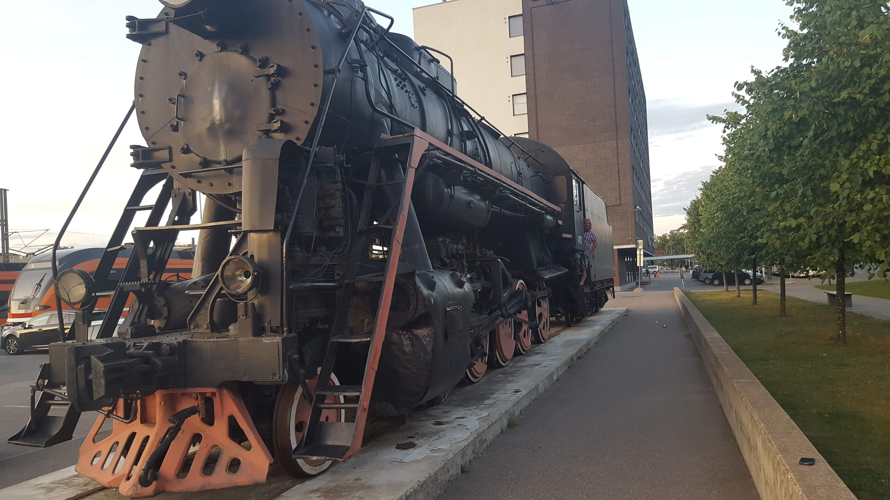
Kliknutím na fotografii ji otevřeš v plné velikosti.
Poznámky k cestě
Tallinn je jedno z těch měst, kde se historie nedá oddělit od současnosti. UNESCO staré město s hradbami, kostelem Olviste a Toompea (horní město) je jako filmová kulisa — a přitom tam lidé žijí. Estonsko je zároveň digitální průkopník (e-Residency, e-government), takže za rohem bývalé hanzy najdeš kavárnu plnou laptopů.
Tip na prohlídku Tallinnu
Reklama · Za rezervaci mohu získat provizi. Nabídku zobrazuje GetYourGuide.